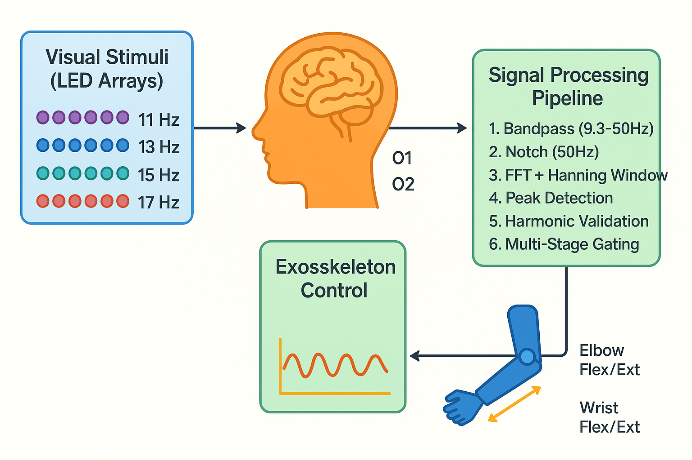

Brain-Controlled Exoskeleton Arm
Assisting Hand-Impaired Individuals
Empowering individuals with upper-limb motor impairments through SSVEP-based brain-computer interface technology. Full pipeline from EEG acquisition and spectral classification to embedded motor control.

Complete System
integrated BCI exoskeleton prototype

System Pipeline
signal processing & control architecture
Project Overview
This innovative project addresses the critical need for assistive technology for individuals suffering from upper-limb motor impairments due to stroke, spinal cord injuries, or neurodegenerative diseases. The system leverages Steady-State Visual Evoked Potential (SSVEP) technology to translate brain signals into precise mechanical movements.
By capturing EEG signals through a specialized headset and processing them in real-time, the exoskeleton enables users to perform voluntary arm movements using only their thoughts, significantly improving their quality of life and independence. Showcased at the IGNITE 2026 Exhibition at KDU — selected as 1 of 5 projects.
Technologies Used
System Features
Non-Invasive BCI
Uses external EEG headset for safe, comfortable brain signal acquisition without surgical intervention. Electrodes placed over the occipital cortex capture visual evoked potentials.
SSVEP Detection
Leverages visual stimulation at specific frequencies (8–15 Hz) to generate reliable, distinct brain signals. LED arrays present stimuli that elicit measurable neural responses.
Real-Time Control
Processes brain signals and translates them into mechanical movements with minimal latency. Multi-threaded Python application handles simultaneous acquisition and control.
Adaptive Design
Adjustable exoskeleton structure accommodates different arm sizes and movement ranges. PID control ensures smooth, natural movement trajectories at key joints.
Key Metrics
Technical Implementation
Signal Acquisition & Processing
The system employs a multi-channel EEG headset positioned over the occipital cortex to capture visual evoked potentials. Raw EEG signals undergo bandpass filtering (5–50 Hz), artifact removal, and signal amplification to ensure clean data for analysis.
SSVEP Stimulus Generation
Visual stimuli are presented at carefully selected frequencies using LED arrays. When users focus on a specific stimulus, their brain generates a measurable electrical response at the corresponding frequency, which serves as the control signal.
Classification Algorithm
Canonical Correlation Analysis (CCA) and Support Vector Machines (SVM) classify the processed EEG signals to determine user intent. The system achieves high accuracy by training on individual user patterns through a dedicated calibration protocol.
Mechanical Actuation
Decoded commands are transmitted to an Arduino microcontroller, which drives high-torque servo motors positioned at key joints — shoulder, elbow, and wrist. PID control algorithms ensure smooth, natural movement trajectories.
Challenges & Solutions
Signal Noise Reduction
EEG signals are inherently noisy due to muscle artifacts and environmental interference. Implemented advanced filtering techniques and shielding to improve signal-to-noise ratio significantly.
User Fatigue
Prolonged visual stimulation can cause eye strain. Optimized stimulus parameters and implemented break periods to maintain user comfort during extended use sessions.
Individual Variability
Brain signals vary significantly between individuals. Developed a calibration protocol that personalizes the system to each user's unique neural patterns for reliable operation.
Impact & Future Directions
This project demonstrates the viability of brain-computer interfaces as practical assistive devices. Future developments include:
- Expanding movement vocabulary to include more complex gestures and fine motor control
- Integrating haptic feedback for improved proprioception and user awareness
- Developing wireless communication for greater patient mobility
- Exploring hybrid BCI approaches combining SSVEP with motor imagery signals
- Clinical trials with patients to validate therapeutic rehabilitation benefits